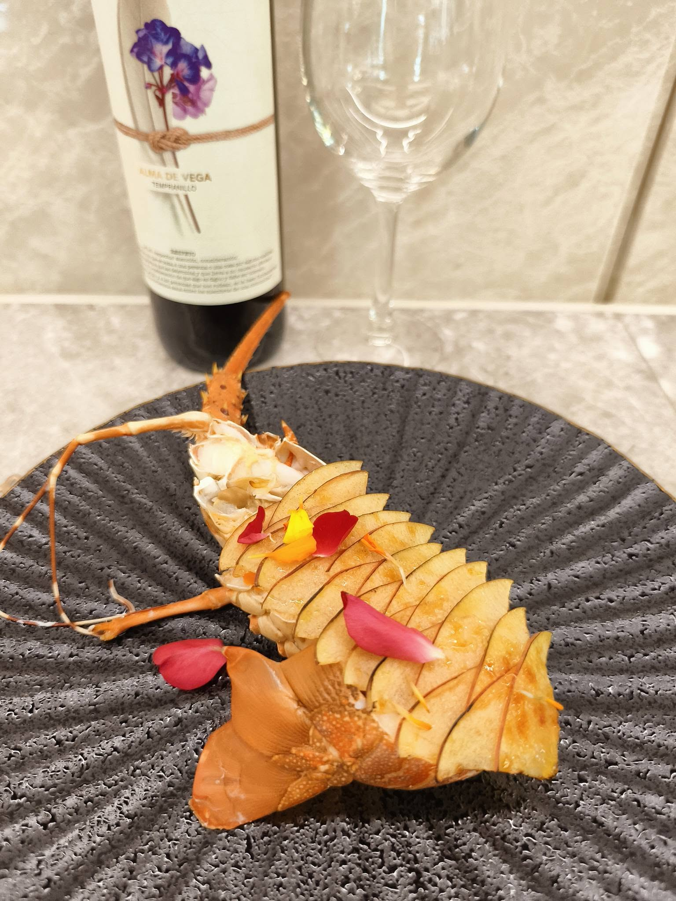

很多人籌辦下午茶會時，會把重心全部放在「甜點好不好吃」，但真正決定一場下午茶會成敗的，其實是整體節奏與氛圍設計。下午茶會通常時間較短（1.5-2.5 小時）、氣氛較輕鬆社交，賓客會邊聊天邊享用，這代表甜點的呈現方式、上桌順序與擺設美學，比單一道菜的份量更重要。
傳統英式下午茶的三層架邏輯——鹹點（三明治、鹹派）在下層、司康在中層、甜點在上層——其實藏著味覺設計的巧思：先鹹後甜，讓賓客的味蕾循序漸進，避免一開始就被過甜的點心「用盡」對甜味的敏感度。建議鹹點與甜點的比例抓在 4:6 到 5:5 之間，並穿插像司康這種「半鹹半甜」的過渡點心。
同一種質地的點心連續出現，容易讓賓客感到單調。建議在甜點選擇上刻意搭配不同質地——例如酥脆的法式千層搭配綿密的慕斯、清爽的水果塔搭配濃郁的巧克力甘納許，讓每一口都有新鮮感。
當季水果（如夏天的芒果、冬天的柑橘）不只是味道更好，也更容易成為賓客之間的話題，提升整場茶會的社交價值。主廚會依照舉辦月份，建議當季最合適的食材組合。
現代下午茶會很大一部分的價值，來自於「值得被分享」的視覺呈現。三層架的高低錯落、餐具的色系搭配、桌花與燭台的比例，都會影響整體畫面的精緻度。建議掌握「留白」原則——桌面不需要塞滿所有點心，適度的留白反而能凸顯每一件甜點的細節。
6-10 人小型茶會：適合客廳或陽台空間，重視精緻與私密感，建議搭配一對一的服務講解每道甜點的設計理念。
10-20 人中型茶會：適合作為生日會、閨蜜聚會或小型商務社交場合，可安排自助式甜點桌搭配定點服務人員。
企業下午茶：常見於品牌發表會或 VIP 客戶接待，重視話題性與品牌形象的呼應，甜點設計可融入品牌色系或主題元素。
無論是家庭聚會還是企業接待，一場成功的下午茶會核心思維都是「讓賓客感受到被用心對待」——這不只是甜點好吃，更包含從邀請函設計、場地佈置到現場服務節奏的整體規劃。舒苑團隊在規劃下午茶會時，會先了解主辦目的與賓客組成，再回推最合適的甜點組合與擺設風格，讓每一場茶會都有獨特的主題性，而不是套用固定公版菜單。
如果您正在規劃一場下午茶會，歡迎提供賓客人數、場地與主題方向，讓主廚為您設計專屬的精緻下午茶方案。更多菜單選擇可參考 菜單方案 頁面。
我們可協助您規劃茶點內容、擺設風格與服務節奏，讓每一場招待都更有辨識度。